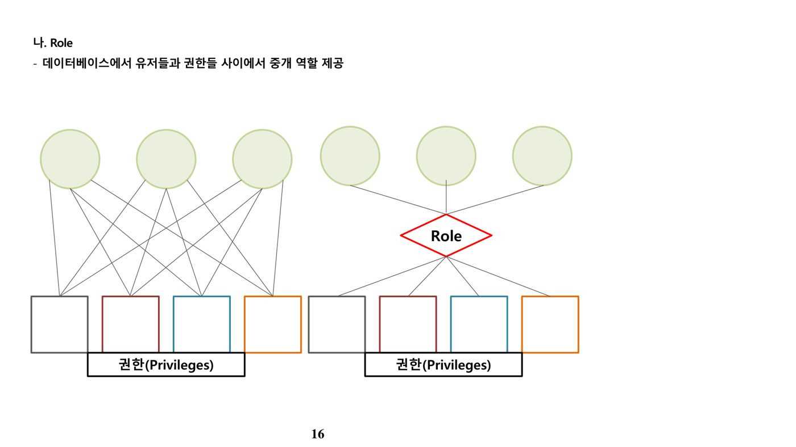
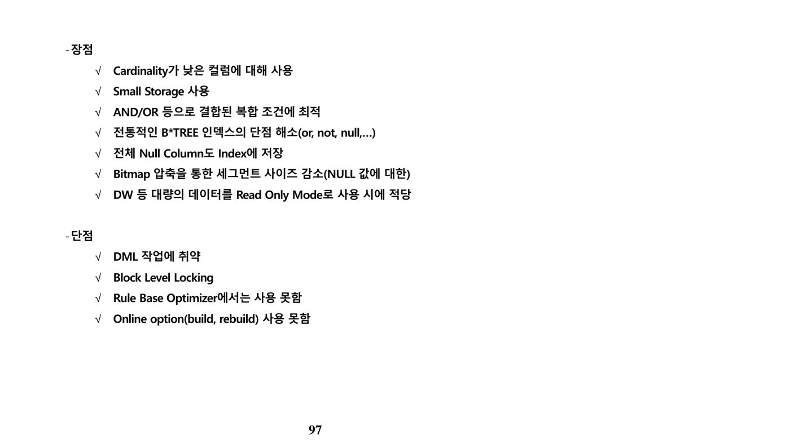
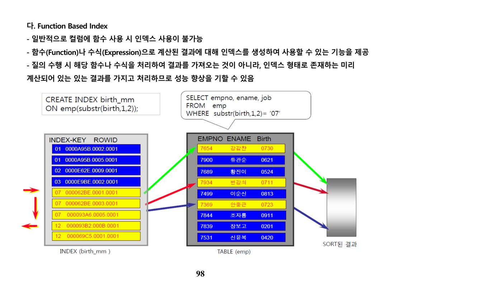
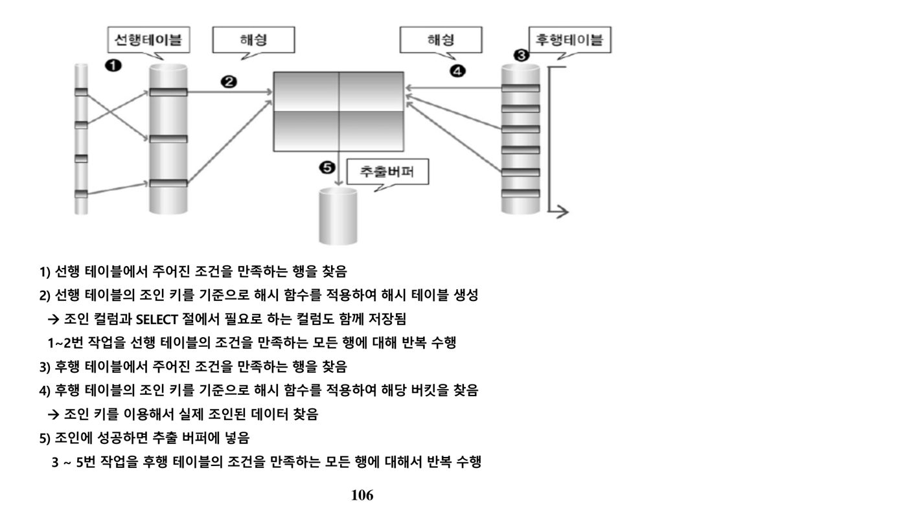
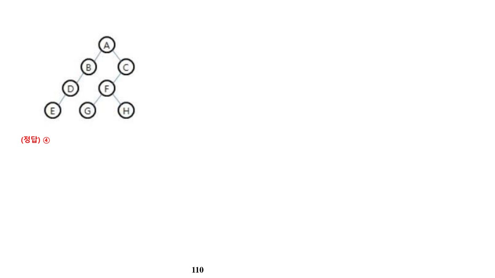
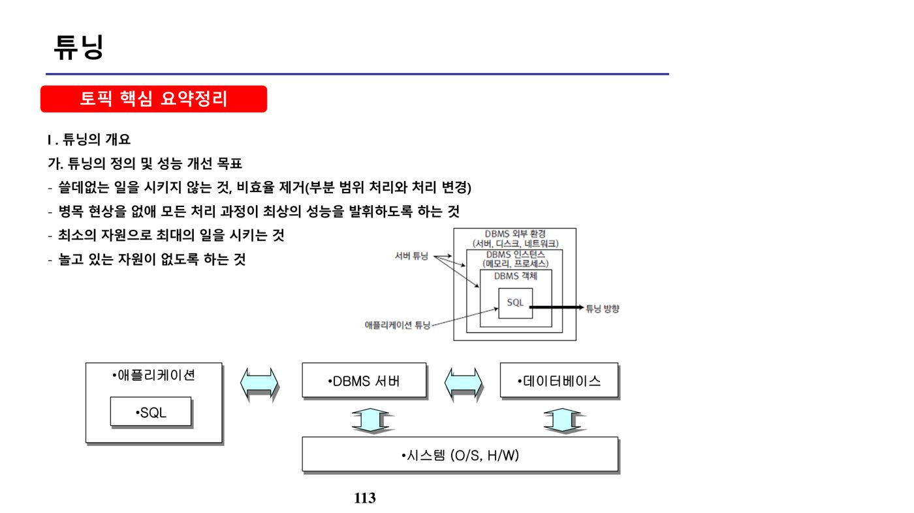
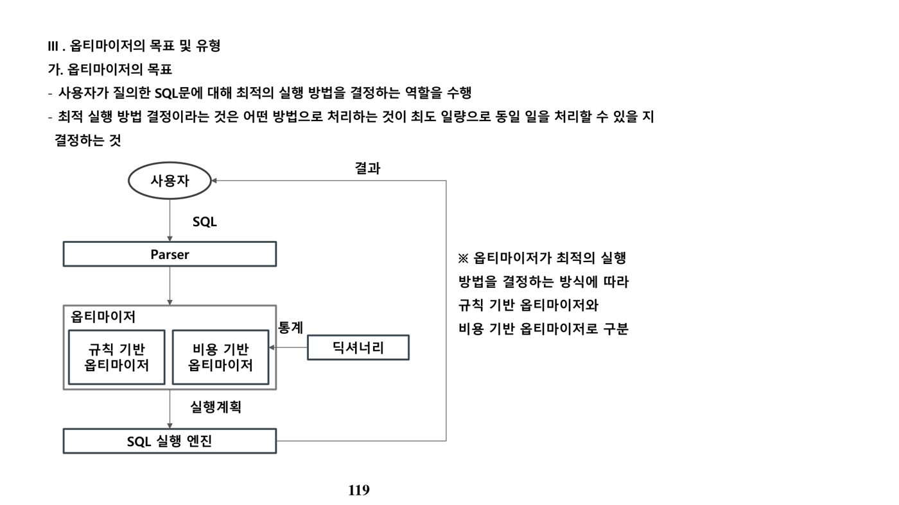

1. SQL (원본 p.2-80)
가. SQL 표준화와 데이터 타입
| 연도 | 내용 |
|---|---|
| 1970년 | Dr. E. F. Codd 관계형 DBMS(Relation DB) 논문 발표 |
| 1974년 | IBM SQL 개발 |
| 1979년 | Oracle 상용 DBMS 발표 |
| 1986년 | ANSI/ISO SQL 표준 최초 제정(SQL-86, SQL1) |
| 1992년 | ANSI/ISO SQL 표준 개정(SQL-92, SQL2) |
| 1999년 | ANSI/ISO SQL 표준 개정(SQL-99, SQL3) |
| Data Type | 설명 |
|---|---|
| CHARACTER(s) | 고정 길이 문자열(Oracle·SQL Server 모두 CHAR). 할당된 값의 길이가 s보다 작으면 남는 공간을 공백으로 채움 |
| VARCHAR(s) | CHARACTER VARYING의 약자로 가변 길이 문자열(Oracle은 VARCHAR2, SQL Server는 VARCHAR). 할당된 값의 바이트만 적용 |
| NUMERIC | 정수·실수 등 숫자 정보(Oracle은 NUMBER). 예: 정수부 6자리·소수부 2자리인 경우 NUMBER(8,2) |
| DATETIME | 날짜와 시각 정보(Oracle은 DATE, SQL Server는 DATETIME). Oracle은 1초 단위, SQL Server는 3.33ms 단위로 관리 |
나. 제약조건과 DDL(CREATE/ALTER/DROP/TRUNCATE)
| 구분 | 설명 |
|---|---|
| PRIMARY KEY(기본키) | 행 데이터를 고유하게 식별. 정의 시 DBMS가 자동으로 UNIQUE 인덱스 생성, NULL 입력 불가(기본키 제약 = 고유키 제약 + NOT NULL 제약) |
| UNIQUE KEY(고유키) | 행 데이터를 고유하게 식별하되, NULL은 고유키 제약 대상이 아니므로 NULL 값을 가진 행이 여러 개 있어도 위반이 아님 |
| NOT NULL | NULL 값의 입력을 금지해 해당 컬럼을 입력 필수로 지정 |
| CHECK | 입력 가능한 값의 범위 등을 제한, TRUE/FALSE로 평가되는 논리식을 지정 |
| FOREIGN KEY(외래키) | 다른 테이블의 기본키를 참조. 지정 시 참조 무결성 제약 옵션(CASCADE/NULL/DEFAULT/RESTRICT/NO ACTION) 선택 가능 |
CREATE TABLE 구문은 컬럼을 괄호로 묶고 콤마로 구분하며 세미콜론으로 끝나야 한다. 테이블명·컬럼명은 문자로 시작해야 하며, 벤더가 정의한 예약어는 사용할 수 없다.
| 명령 | 구문 요지 |
|---|---|
| ADD COLUMN | ALTER TABLE 테이블명 ADD 추가할 컬럼명 데이터유형; |
| DROP COLUMN | ALTER TABLE 테이블명 DROP COLUMN 삭제할 컬럼명; |
| MODIFY COLUMN | ALTER TABLE 테이블명 MODIFY (컬럼명 데이터유형 [DEFAULT 식] [NOT NULL]); |
| RENAME COLUMN | ALTER TABLE 테이블명 RENAME COLUMN 변경 전 컬럼명 TO 변경 후 컬럼명; |
| ADD/DROP CONSTRAINT | ALTER TABLE 테이블명 ADD/DROP CONSTRAINT 제약조건명 ...; |
| RENAME TABLE | RENAME 변경 전 테이블명 TO 변경 후 테이블명; |
| DROP TABLE | DROP TABLE 테이블명 [CASCADE CONSTRAINT]; — CASCADE CONSTRAINT는 참조하던 제약조건도 함께 삭제 |
| TRUNCATE TABLE | TRUNCATE TABLE 테이블명; — 모든 행을 제거하고 저장 공간을 재사용 가능하도록 해제(DDL, 롤백 불가) |
다. DML — INSERT/UPDATE/DELETE/SELECT와 WHERE절 연산자
| 명령 | 설명 |
|---|---|
| INSERT(삽입) | INSERT INTO 테이블명(컬럼리스트) VALUES (값리스트); |
| UPDATE(수정) | UPDATE 테이블명 SET 수정할 컬럼명 = 값 [WHERE 조건]; |
| DELETE(삭제) | DELETE FROM 테이블명 [WHERE 조건]; |
| SELECT(조회) | SELECT [ALL/DISTINCT] 컬럼리스트 FROM 테이블명; — ALL은 기본값(중복 출력), DISTINCT는 중복 데이터를 1건으로 처리 |
WHERE절은 컬럼명 → 연산자 → 문자/숫자/표현식(또는 JOIN 시 비교 컬럼명) 구조로 구성되며, 연산자 우선순위는 ① 괄호() ② NOT 연산자 ③ 비교 연산자·SQL 비교 연산자 ④ AND ⑤ OR 순이다.
| 구분 | 연산자 | 의미 |
|---|---|---|
| 비교 연산자 | =, >, >=, <, <= | 일반 대소 비교 |
| SQL 연산자 | BETWEEN a AND b / IN (list) / LIKE '문자열' / IS NULL | 범위·목록·패턴(%)·NULL 여부 비교 |
| 논리 연산자 | AND / OR / NOT | AND는 동시 만족, OR는 하나만 만족, NOT은 반대 결과 반환 |
| 부정 비교 연산자 | !=, ^=, <>(ISO 표준) | 같지 않다 |
| 부정 SQL 연산자 | NOT BETWEEN / NOT IN / IS NOT NULL | 범위·목록·NULL 여부의 부정 |
라. 집계함수·GROUP BY·HAVING·ORDER BY
| 집계함수 | 사용 목적 |
|---|---|
| COUNT(*) | NULL 값을 포함한 행의 수 출력 |
| COUNT(표현식) | 표현식 값이 NULL이 아닌 행의 수 출력 |
| SUM / AVG / MAX / MIN | NULL을 제외한 합계·평균·최댓값·최솟값 출력 |
| STDDEV / VARIAN | 표준편차·분산 출력 |
GROUP BY절은 FROM·WHERE절 뒤에 오며 데이터를 소그룹으로 분류한다. 집계함수는 WHERE절에 올 수 없고, GROUP BY절에서는 ALIAS를 사용할 수 없다. HAVING절은 GROUP BY로 만들어진 소그룹의 집계 결과에 조건을 부여할 때 사용한다. ORDER BY절은 조회 결과를 정렬하며 SELECT → FROM → WHERE → GROUP BY → HAVING → ORDER BY 순으로 배치된다. 기본 정렬은 오름차순(ASC)이며, Oracle은 NULL을 가장 큰 값으로, SQL Server는 가장 작은 값으로 간주한다는 벤더 차이가 자주 출제된다.
마. JOIN — EQUI/NON-EQUI
| 구분 | 설명 |
|---|---|
| EQUI JOIN | 두 테이블의 컬럼 값이 정확히 일치하는 경우 사용. WHERE 테이블1.컬럼 = 테이블2.컬럼 또는 INNER JOIN ... ON 구문 사용 |
| Non EQUI JOIN | 두 테이블 간 컬럼 값이 정확히 일치하지 않을 때 사용. WHERE 테이블1.컬럼 BETWEEN 테이블2.컬럼1 AND 테이블2.컬럼2 형태 |
바. 사용자 생성과 권한 관리(GRANT/REVOKE)
Oracle은 DBA 권한을 가진 SYSTEM 유저로 접속해 유저 생성 권한을 부여한 뒤 사용자를 생성하고, MS SQL Server는 로그인을 먼저 생성한 후 대상 DB로 이동해 사용자를 생성한다는 절차 차이가 있다.

| 구분 | 구문 |
|---|---|
| GRANT(권한부여) | 시스템 권한: GRANT [권한명|롤|ALL] TO [유저명|롤|PUBLIC] [WITH ADMIN/GRANT OPTION]; / 오브젝트 권한: GRANT [권한명|ALL] ON [객체명] TO [유저명]; |
| REVOKE(권한해제) | REVOKE [권한명|ALL] ON [객체명] FROM [유저명|롤|PUBLIC] [CASCADE CONSTRAINTS]; |
GRANT로 부여 가능한 권한은 SELECT·UPDATE·DELETE·INSERT 등 오브젝트 권한이며, CHECK는 제약조건(Constraint)이지 GRANT 대상 권한이 아니다.
| Object Privilege | Table | View | Sequence | Procedure |
|---|---|---|---|---|
| ALTER | ✓ | ✓ | ||
| DELETE | ✓ | ✓ | ||
| EXECUTE | ✓ | |||
| INDEX | ✓ | |||
| INSERT | ✓ | ✓ | ||
| REFERENCES | ✓ | |||
| SELECT | ✓ | ✓ | ✓ | |
| UPDATE | ✓ | ✓ |
2. VIEW (원본 p.81-91)
가. 뷰(View)의 정의와 특징
뷰(View)는 하나 이상의 기본 테이블로부터 유도된 이름을 가진 가상 테이블이다. 하나 또는 그 이상의 테이블에서 원하는 데이터만 모아 가상적으로 만들며, 자주 사용되는 질의를 정의해 두어 반복되는 데이터 조작을 효율적으로 수행하고, 사용자가 관심을 가지는 데이터에만 초점을 맞춘다. 계산된 정보나 파생된 정보 제공이 가능하며, 사용자가 볼 수 있는 데이터를 제한하는 보안 기능도 수행한다. 단, 뷰는 저장 공간(별도의 데이터 복사본)을 가지지 않으므로 데이터의 일부를 복사해 백업하는 용도로는 사용할 수 없다.
| 구분 | 설명 |
|---|---|
| CREATE VIEW | CREATE VIEW 뷰이름 [(컬럼명 [,컬럼명…])] [WITH ENCRYPTION] AS select문 [WITH CHECK OPTION] |
| WITH CHECK OPTION | 뷰에 대해 수행되는 모든 데이터 수정 문장이 뷰를 정의하는 SELECT문의 조건을 지키도록 강제 — 뷰에서 선택할 수 없는 투플에 대한 삽입·삭제·수정은 에러 발생. 데이터 무결성 유지에 사용되며, 뷰의 정의 권한을 다른 사용자에게 부여하는 용도는 아님 |
| WITH ENCRYPTION | 뷰를 생성하는 텍스트를 사용자가 볼 수 없도록 암호화. 해제하려면 뷰를 삭제 후 재생성해야 함 |
| 제약사항 | 뷰의 사용자는 뷰 정의에 사용된 엔티티에 대한 SELECT 권한 보유 필요, SELECT INTO 문 사용 불가, 임시 테이블에 대한 뷰 생성 불가, 트리거·색인 생성 불가, 최대 250 컬럼 참조 가능 |
나. 뷰의 데이터 수정 제약
뷰는 별도의 데이터 복사본을 가지지 않으므로 뷰에 대한 갱신은 항상 원본(기본) 테이블에 영향을 미친다. 뷰에 대한 갱신은 하나 이상의 원본 테이블에 영향을 미칠 수 없고, 단지 하나의 테이블에만 영향을 줄 수 있으며(따라서 두 개 이상의 릴레이션을 조인해 정의한 뷰는 일반적으로 갱신이 불가능), 계산된 값이나 내장함수·계산함수를 포함하는 컬럼(집계함수가 포함된 뷰 등)에 대해서는 뷰를 통한 갱신이 허용되지 않는다. NOT NULL 컬럼을 가지는 테이블에 영향을 미치는 경우에는 오류가 유발되며, 입력되지 않은 컬럼들은 디폴트 값이 정의되어 있거나 NULL이 허용되어 있어야 한다. 실체화된 뷰(Materialized View)를 생성할 때는 CREATE MATERIALIZED VIEW 구문을 사용하며, 일반 뷰의 GROUP BY절 사용 자체는 가능하다는 점도 함께 기억해 둔다.
3. 인덱스 (원본 p.92-112)
가. 인덱스의 역할과 의미
인덱스는 튜닝의 가장 중요한 포인트(적절한 인덱스 선택·변경·생성·삭제)이자 옵티마이저가 실행계획(Plan)을 만드는 핵심 판단 기준이다. 최소한의 데이터 블록 읽기로 성능을 향상시키기 위해 대표 키와 Row 주소 정보(ROWID)만 미리 정렬해 두며, ROWID를 통한 액세스가 가장 빠른 조회 경로다. 인덱스 구성 컬럼의 전체 값이 NULL이면 그 행은 인덱스에서 제외되지만(일부만 NULL인 경우는 포함), Bitmap Index는 정합성 보장을 위해 NULL 값도 포함한다. 인덱스 내 NULL 값은 자기 단계(정렬 순서)의 가장 끝에 위치한다.
나. 인덱스 유형 — B*Tree, Bitmap, Function Based
B*Tree Index는 가장 범용적으로 사용되는 인덱스(OLTP·DW 공통)로, Root Block과 Branch를 거쳐 Leaf Block에 각 값에 대한 ROWID를 포함하며 Leaf Block 간에는 Double Linked List로 연결되어 정렬 순서를 유지한다.


Bitmap Index는 값의 종류가 적은(예: 성별, 결혼 여부) 컬럼에 대해 각 값의 존재 여부를 0/1 비트맵으로 표현하며, AND/OR 연산으로 결합된 복잡한 조건을 빠르게 처리할 수 있다. Function Based Index는 CBO(Cost Based Optimizer)에서만 사용 가능하며, 산술식·PL/SQL 함수·SQL 내장함수의 결과에 대해 range scan이 가능하도록 INSERT/UPDATE 시점에 미리 계산된 값을 인덱스에 저장한다(단, 집계함수(Aggregate function)와 LOB·REF·중첩 테이블 컬럼에는 생성 불가).
| 구분 | 내용 |
|---|---|
| 대상 테이블 | 데이터 양이 많고 증가량이 큰 테이블 |
| 대상 컬럼 | WHERE절에서 상수 조건으로 빈번히 사용되는 컬럼, 기본키·외래키, 테이블 조인에 사용되는 컬럼, 분포도가 좋은 컬럼(단독 생성), 자주 함께 쓰이는 조건 컬럼(결합 인덱스), 수정이 빈번하지 않은 컬럼 |
| 고려 사항 | 컬럼 분포도가 10~15% 이내인 경우 B*Tree 인덱스 생성(그 외 분포도가 낮지만 꼭 필요하면 Bitmap Index 고려), 넓은 범위 인덱스는 부하 가중 우려, 한 테이블에 인덱스가 과다하면 DML 오버헤드 발생 |
다. 조인의 유형 — Nested Loop / Sort Merge / Hash
조인은 항상 2개 테이블(집합) 간 처리이며, FROM절에 3개 테이블이 있어도 동시에 3개가 조인되는 것이 아니라 단계별로 서로 다른 조인 기법이 적용될 수 있다.
| 구분 | Nested Loop | Sort Merge | Hash |
|---|---|---|---|
| 처리 방식 | 선행 테이블의 조건을 만족하는 행을 하나씩 찾아 후행 테이블과 순차적으로 조인(완전 부분 범위) | 양쪽 테이블을 각자 정렬(Sorted Lists)한 뒤 스캔하며 병합 | 작은 집합의 해시 테이블을 메모리에 만들고 큰 집합으로 탐색 |
| Access 방식 | Random Access(인덱스 유무에 성능 좌우) | Scan 방식 | Hash Function |
| 특징 | OLTP에서 가장 많이 사용, 랜덤 액세스 위주라 대용량 처리에 한계, 드라이빙 테이블 선택(Join Order)이 중요 | 랜덤 I/O 부하가 큰 Nested Loop보다 전체 테이블 처리에 유리하나 SORT AREA 부담으로 대용량 시 속도 저하 가능 | Random 액세스·정렬 부담이 모두 없어 대용량 조인에 유리하나 해시 테이블 생성 비용 발생, CBO·Equi-Join에서만 가능 |
| 사용 resource | BUFFER CACHE | PGA(Sort area size) | PGA(Hash area size) |


4. 튜닝 (원본 p.113-134)
가. 성능 지표와 성능 설계 튜닝

| 구분 | 설명 |
|---|---|
| 처리능력(Throughput) | 단위 시간당 수행되는 작업량 |
| 처리시간(Throughput Time) | 단위 작업을 수행하는 데 소요되는 시간 |
| 응답시간(Response Time) | 사용자가 키를 누른 순간부터 시스템이 응답할 때까지 소요되는 시간 |
| 로드 시간(Load Time) | 데이터베이스를 적재하는 데 소요되는 시간 |
성능 설계 튜닝은 유사 엔티티의 통합·분리, 복잡한 비즈니스 키(주민번호·학번 등)를 시스템 키(발생 순서 기반)로 대체하는 기본키 조정, 정규화·반정규화를 통한 데이터 모델 구조 변경, 기본키 구성 속성의 효율적 순서 지정·외래키 컬럼 인덱스 생성 등 인덱스 관련 개선을 포함한다.
나. SQL 튜닝 절차와 SQL 성능 저하 원인
| 튜닝 단계 | 설명 |
|---|---|
| 문제 SQL문 식별 | 자원을 많이 소모하거나 빈번히 수행되는 악성 SQL 추출(SQL TRACE 등 활용) |
| Optimizer 모드·통계정보 확인 | Optimizer Mode(ALL_ROWS/FIRST_ROWS) 확인, 통계정보 수집 여부·최신성 확인 |
| 실행계획 분석 | 스텝별 결과 Row 수로 병목지점 식별, 인덱스 사용 여부·조인 방식/순서·비의도적 Cartesian Product 확인 |
| SQL문 재구성 | AND 및 "="을 사용한 술어 작성, 인덱스 사용 컬럼 변형 금지, 필요한 경우에만 힌트 사용 |
| 인덱스 생성/재구성 | 중요 컬럼에 인덱스 생성, 결합 인덱스로 선택도 향상, 불필요한 인덱스 제거 |
| 실행계획 유지관리 | 필요 시 stored outline으로 단일 SQL문의 실행계획 유지 |
SQL 성능 저하의 주요 원인으로는 인덱스 부재 및 비효율적 설계, 잘못된 조인 순서·방법, 불필요한 Sorting, 과도한 Hard Parsing, 부정확한 통계정보, CPU/Memory 자원 부족, Disk 성능 저하·IO 경합, 데이터 편중(Skewed data)으로 인한 인덱스 효율 저하, 업무 변경에 따른 SQL 수정 필요, 데이터 증가, 부적절한 Hint 등이 있다. 개발자는 옵티마이저가 생성한 질의 실행계획 자체를 직접 편집하거나 실행계획에 직접 힌트를 추가할 수는 없으며, 대신 인덱스를 추가·변경하거나 SQL문을 재작성해 질의 최적화를 수행할 수 있다.
다. 비용 기반 옵티마이저(CBO)와 실행 엔진
| 엔진 | 역할 |
|---|---|
| Parser | SQL 문장의 개별 구성요소를 분석·파싱해 파싱 트리 생성, Syntax·Semantic 체크 수행 |
| Optimizer > Query Transformer | 파싱된 SQL을 더 일반적이고 표준적인 형태로 변환 |
| Optimizer > Estimator | 통계 정보를 이용해 각 단계의 선택도·카디널리티·비용을 계산, 전체 실행계획의 총 비용 산정 |
| Optimizer > Plan Generator | 후보군이 될 만한 실행계획들을 생성 |
| Row-Source Generator | 옵티마이저가 생성한 실행계획을 실제 실행 가능한 코드/프로시저 형태로 포맷팅 |
| SQL Engine | SQL 실행 |

CBO는 SQL문 처리에 필요한 비용(예상 소요시간·자원 사용량)이 가장 적은 실행계획을 선택하는 방식으로, 통계정보가 없거나 부정확하면 비효율적인 실행계획을 생성하므로 정확한 통계정보 유지가 중요하다. 사용자 접근 제어 권한을 정하는 것은 성능 튜닝이 아니라 보안 관점의 고려사항이라는 점도 출제 포인트다.
📚 전체 기출·예상문제 (34문항) — 원문 수록
본 강좌 원본 PDF에 수록된 기출·예상문제를 빠짐없이 원문 그대로 정리했습니다. 정답·해설은 강의 원문 기준입니다.